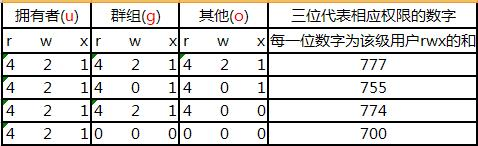

sudo apt-get install --no-install-recommends gnome-panel
gnome-desktop-item-edit --create-new ~/Desktop
copy: Ctrl + Insert
paste: Shift + Insert or Shift + Ctrl + V (Gnome) or mouse middle button
$ sudo update-alternatives --config java
# uninstall app
$ sudo apt-get remove --purge app
$ sudo apt-get autoremove --purge
Unix Time
$ date +%s